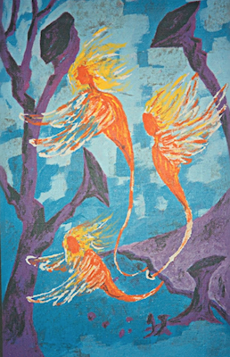

|
Social Conditioning of Being an “Angel”
|
Painting "Cave Angels" by Anda Vitols. 1980ish. What are angels?, I asked long ago. I wondered why I found people living as self-proclaimed "angels" so frightening to be near. And why do angels have to come from the sky? Are they not all around us - perhaps even in caves? I created these angels in my own eye. They are faceless as they are an essence, without human influence. It's amazing that decades later, I still love this illustration. Perhaps because I created it so true to my thoughts, and not my social conditioning. Perhaps it's the irony of the whole angel thing in society. This blog furthers that conversation...
Are you an angel? Or do you think that you are? Are you acting in "good" ways to avoid your truth, covering the real part of yourself up? |
 |
- Many people live in the sweetness of spirituality because they are conditioned to do so, instead of facing the truth of their own life. Social conditioning, at a subconscious level, can lead to feelings of shame and guilt, which can make it difficult for people to look at themselves. This is not in line with the social conditioning of angelic sweetness, so people avoid that truth of themselves by avoiding that part of themselves. If that does not work, they may project that darker part of ignored self-truths onto innocent bystanders.
- To avoid looking at the truth of themselves, many people make themselves out to be world peace restorers. It is much easier to change the world, to go to a foundation and give back, than it is to change yourself. There is an overemphasis on the happy and good, but it is all fake. And this fakeness is unattractive, and let’s be real - it is destructive.
- The whole black and white thing, being judgmental, is what is getting many in trouble. If we are not honest, people can sense it, and it is not attractive. Toggling between black and white is not attractive. Saying that it is always their fault, and you are always “good”, destroys life force, and so is not attractive.
- Many people have been conditioned to think that if they admit to bad things inside themselves, they will go to hell. However, not addressing the bad within us can lead us to manifest in that direction. When manifesting from a place of trying to get away from something - in other words, “I’m going to create this, so that I am getting away from that bad darkness” - it always haunts you, follows you. What we resist, persists.
- Successful manifestation creates a life that feels good. It is when you create something and want to move towards it purely, not because you want to move away from something. When things click, and you really mean it.
- Nobody is a bad person, but we all have bad within us. To successfully alchemize and heal ourselves, we have to feel it, be in it, instead of sweeping it under the rug. This has nothing to do with being an angel or villain, with heaven or hell, with good or bad. It has to do with replacing fake happiness and goodness with your own truth. This is genuine happiness, which leads to genuine kindness.
Journals Home
|